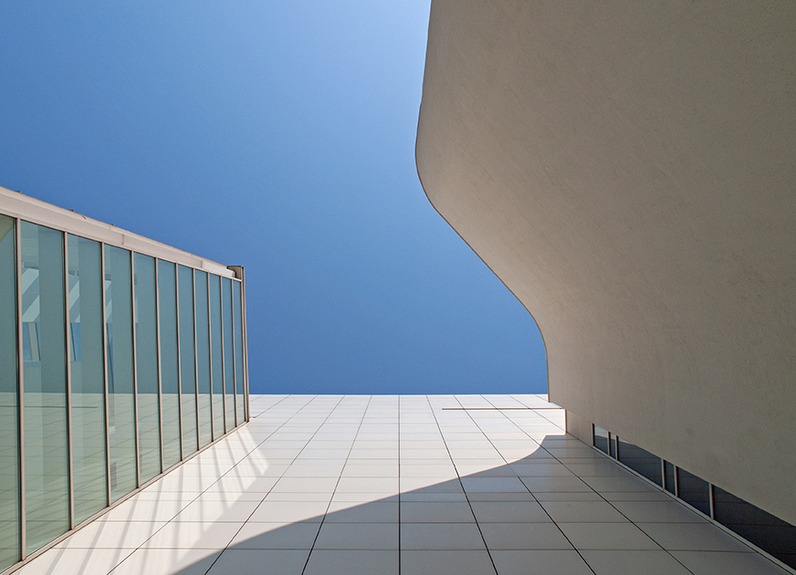

Sobre el MACBA

¿Quiénes Somos?
El Museo de Arte Contemporáneo de Barcelona, oficialmente y en catalán Museu d’Art Contemporani de Barcelona, conocido también por sus siglas MACBA, está dedicado a la exposición de obras realizadas durante la segunda mitad del siglo XX. Se encuentra ubicado en el barrio de El Raval de la ciudad de Barcelona, muy cerca del Centro de Cultura Contemporánea de Barcelona. Está declarado museo de interés nacional por la Generalidad de Cataluña. Actualmente su director es Ferran Barenblit.

Historia
La idea de establecer un museo de estas características en Barcelona se debe al escritor y crítico de arte Alexandre Cirici-Pellicer quien en 1953 ideó, fundó y presidió la Associació d’Artistes Actuals (1956-1965), formada por artistas, críticos y aficionados al arte, que contribuyeron a la creación de una colección creada sobre la base de un proyecto a semejanza del Museo de Arte Moderno de Nueva York. Realizaron diversas exposiciones itinerantes con obras de artistas de la época y certámenes anuales como el célebre Salón de mayo (1956-1969), en Barcelona. La muestra El arte y la paz, celebrada el 1963 y que tenía un claro contenido antifranquista, supuso el fin de la idea de Cirici. La colección hasta entonces recopilada se depositó en la Biblioteca Museo Víctor Balaguer de Villanueva y Geltrú, donde se puede visitar actualmente.
Objetivos y Valores
Como ente público, el Museu d’Art Contemporani de Barcelona (MACBA) asume la responsabilidad de transmitir el arte contemporáneo, ofrecer una multiplicidad de visiones y generar debates críticos sobre el arte y la cultura, una misión que aspira a integrar públicos cada vez más amplios. El MACBA debe entenderse, pues, como una institución abierta en la que los ciudadanos encuentren un espacio de representación pública. Si a ello se añade la vocación educativa, su voluntad de innovación y el compromiso de preservar el patrimonio y de trabajar en red con otras instituciones, la suma de tales objetivos sitúa al MACBA a la cabeza del sistema del arte contemporáneo en Cataluña, al tiempo que consolida Barcelona como capital y referente internacional.
El Edificio
El edificio principal del MACBA, con 14.300 m² útiles, es obra del arquitecto estadounidense Richard Meier. Proyectado en 1990, su construcción se inició en 1991 y se prolongó hasta 1995. El jefe de proyecto fue Renny Logan. El objetivo del edificio era unir el arte contemporáneo expuesto en el interior con las formas históricas de los edificios que la rodean. La utilización del color blanco, complementada por el uso de claraboyas de vidrio y de materiales reflectantes, hace que el edificio disponga de una especial luminosidad. La obra de Meier está influenciada por los trabajos de Le Corbusier y hace una reinterpretación del racionalismo. En este proyecto se puede observar la combinación de espacios rectas con líneas curvas, donde la luz exterior juega un papel muy importante.